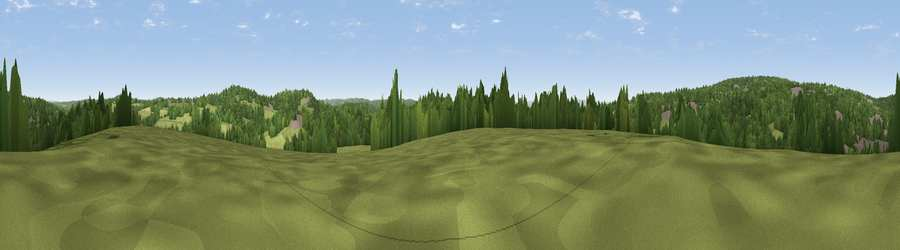

Viewpoint near Rotherfield
#39196 in England · top 70% of its area beats it · near RotherfieldThe view, rendered

A 360° render of this exact spot computed from the terrain model, tree cover and land cover — summer colours, afternoon light, calibrated against photographs of famous viewpoints. Real trees, hedges and buildings will differ in detail.
The panorama
Grey silhouette: terrain skyline in each direction (720 bearings, Earth curvature and refraction included). Dashed green: skyline with trees (+15 m) and buildings (+8 m) as obstacles. Blue strip: how far the ground is visible on each bearing.
Where the view opens
Wedge length = distance to the farthest visible ground on that bearing (vegetation-aware). Rings at 10, 25 and 50 km.
What fills the view
49% woodland · 40% grassland · 9% built-up · 1% cropland
Angular shares of the visible panorama (visual magnitude), not map area. Landscape diversity 0.44 (0–1 Shannon).
Key numbers
More beautiful places nearby
The staircase of upgrades: each row has a higher view potential than everything closer. Driving times are estimates from straight-line distance, calibrated against real road routing — check an actual route before setting out.
| Place | Direction | Drive | Score |
|---|---|---|---|
| Viewpoint near Rotherfield | S · 1 km | ~3 min | 46.0 |
| Viewpoint near Rotherfield | E · 2 km | ~6 min | 54.7 |
| Viewpoint near Upper Hartfield | WNW · 7 km | ~15 min | 59.6 |
| Brightling Obelisk [Brightling Down] | ESE · 16 km | ~28 min | 69.1 |
| Viewpoint near Glynde | SSW · 21 km | ~35 min | 70.8 |
| Malling Hill | SSW · 21 km | ~35 min | 73.8 |
| Cliffe Hill | SSW · 21 km | ~35 min | 79.3 |
| Viewpoint near Plumpton | SW · 23 km | ~38 min | 80.4 |
51.03968, 0.18560 · source: screening · position refined by local search. Computed location — check access rights before visiting.